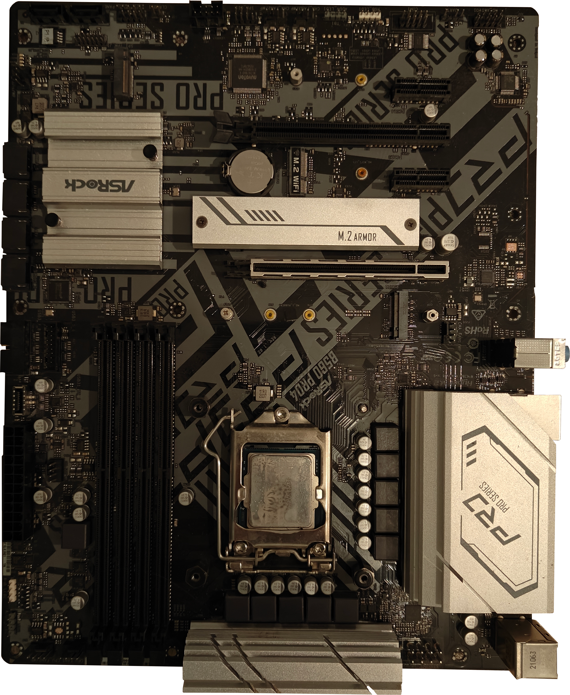
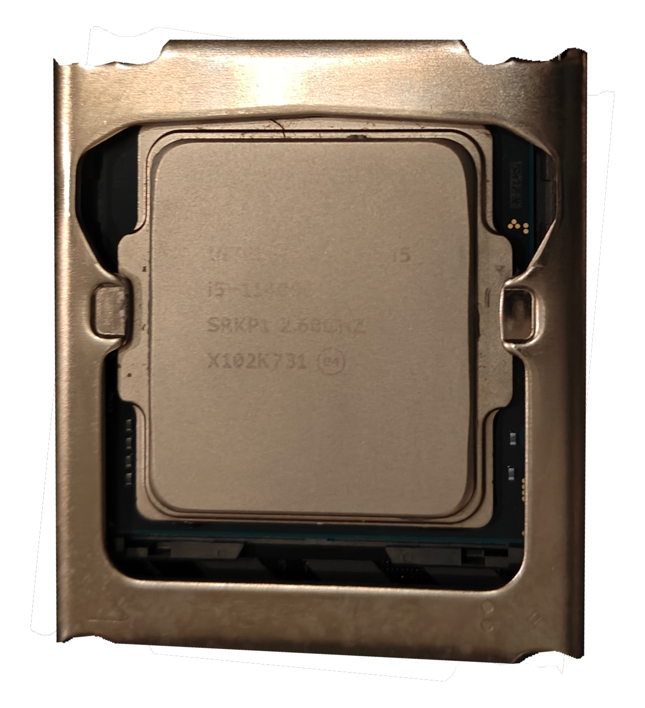
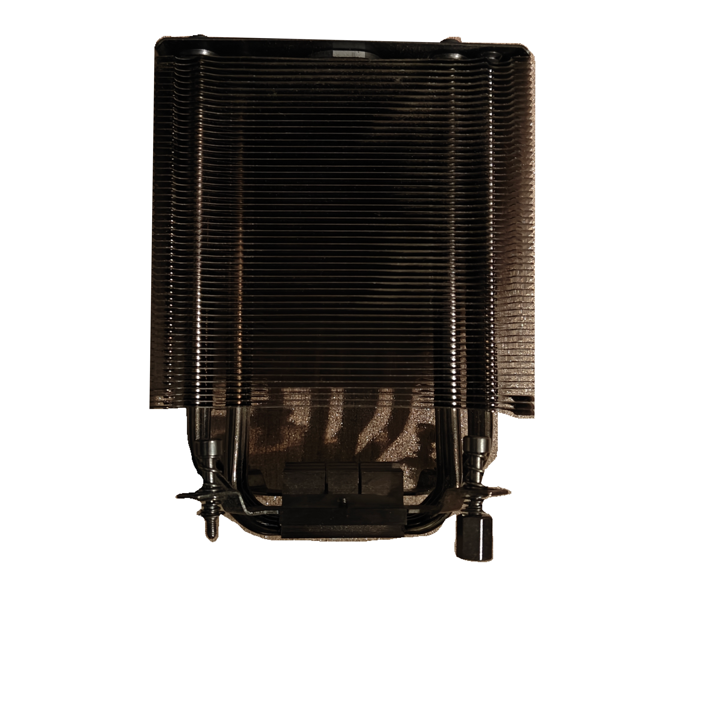
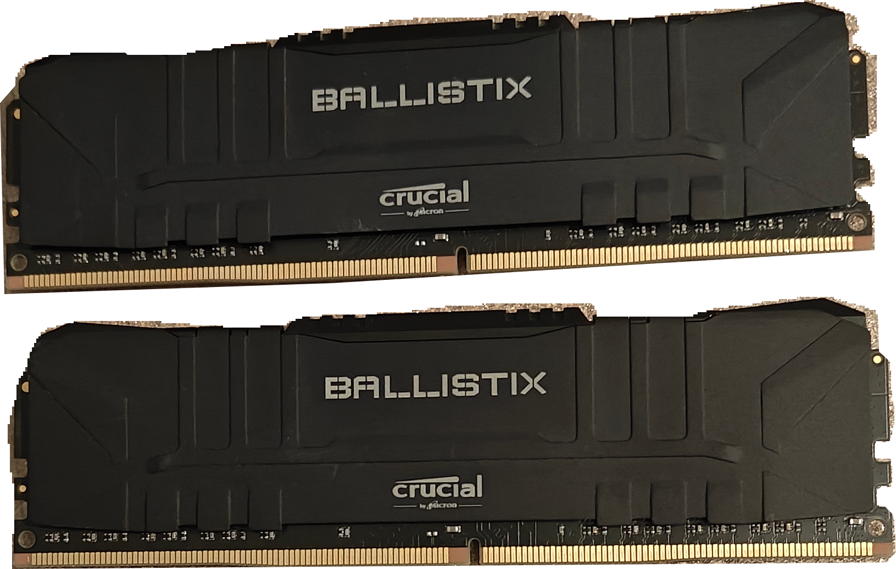
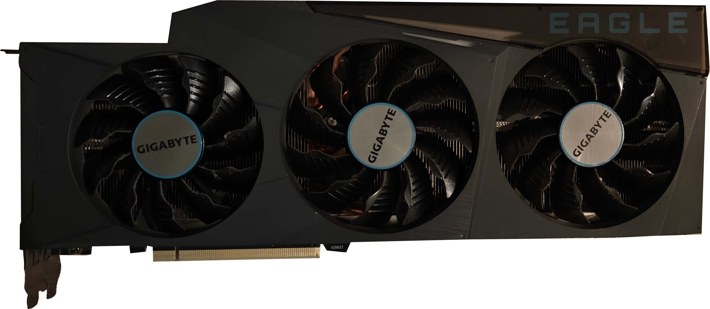
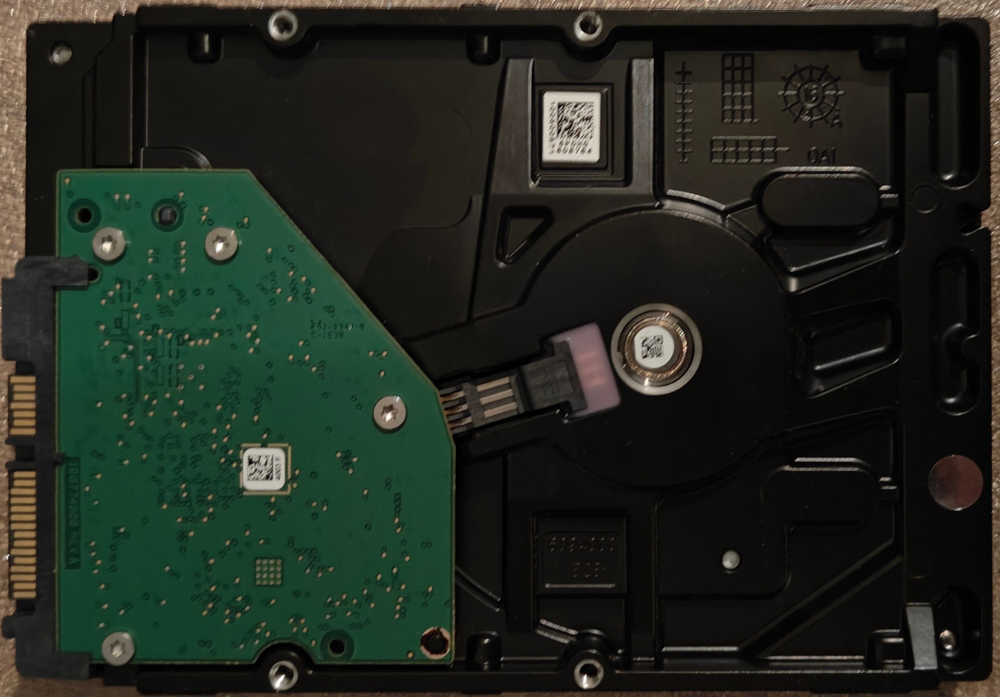

Moederbord
Mobo

Voor je onderdelen gaat bestellen, is het essentieel dat je weet wat voor onderdelen er zijn, welke vereist zijn voor een werkende PC-build en hoe onderdelen fysiek en technisch met elkaar communiceren. Omdat pc-hardware zich snel ontwikkelt, werken fabrikanten met verschillende generaties die soms wel en soms absoluut niet met elkaar te combineren zijn. Deze pagina legt uit hoe je voorkomt dat je onderdelen koopt die fysiek niet passen of technisch niet samenwerken.
Er zijn best wel wat verschillende soorten onderdelen te koop om in je pc te zetten, echter zijn lang niet alle onderdelen vereist om je (gaming-)PC aan en draaiend te krijgen. Of er zijn varianten op componenten waar er één soort vereist is (ik kies naar jou waterkoeler of luchtkoeler voor processor). Dit is de lijst aan vereiste componenten:
Mobo

Case

Power Supply Unit, PSU

Central Processing Unit, CPU

CPU Cooler

Random Access Memory, RAM

Graphical Processing Unit, GPU

Hard disk, SSD (Solid State Drive)

Compatibiliteit bij een pc bestaat uit drie lagen. Onderdelen moeten op elkaar passen (zoals een processor op de socket van het moederbord), in elkaar klikken (zoals RAM-geheugen, M.2 SSD's en de videokaart in de daarvoor bestemde sleuven) en mét elkaar samenwerken. Dat laatste betekent dat de voeding voldoende en stabiele stroom levert aan alle componenten en dat de processor en videokaart goed op elkaar zijn afgestemd om prestatie-knelpunten (bottlenecks) te voorkomen.
Een generatie geeft de technologische 'jaargang' of evolutie van een onderdeel aan. Fabrikanten zoals Intel, AMD en NVIDIA brengen geregeld nieuwe hardware-generaties uit (zoals AMD Ryzen 5000 vs. 7000/9000, Intel Core 3000 vs. Intel Core 12000 series of DDR4 vs. DDR5 werkgeheugen). Elke nieuwe generatie is sneller, efficiënter en maakt vaak gebruik van nieuwere standaarden. Echter veranderen bij een nieuwe generatie regelmatig ook de fysieke aansluitingen en de stroomvereisten op het moederbord.
Sommige componenten kunnen backwards- en/of forwards-compatible, d.w.z. die werken met oudere generatie hardware of zijn al wat ouder en werken dus op nieuwere generaties hardware. Als je dus in de toekomst een upgrade wil doen, hoef je niet altijd álles te vervangen.